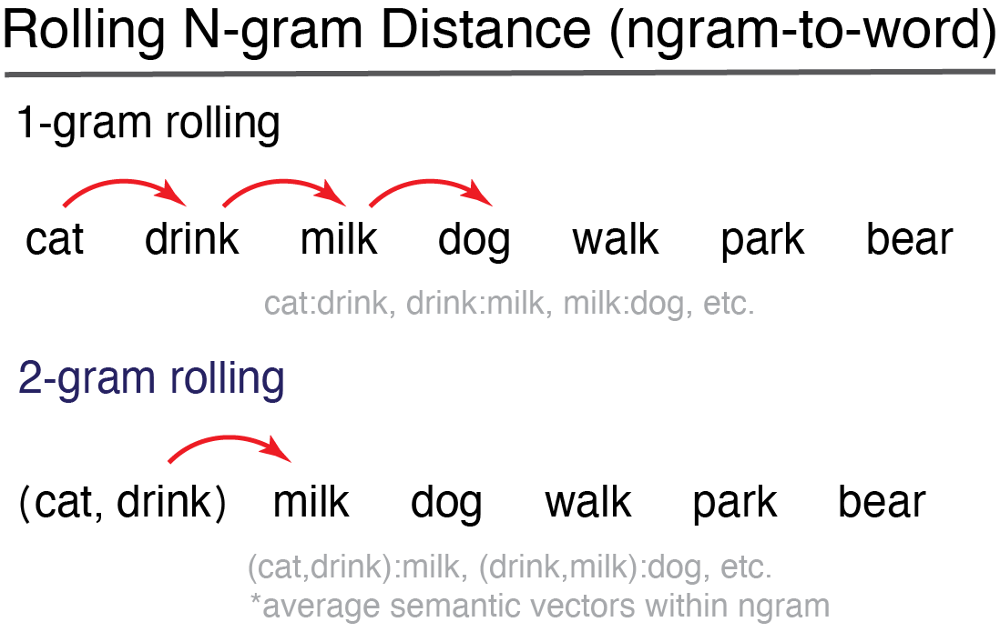

SemanticDistance cleans and formats your target text (embedded in a dataframe). The package then computes pairwise metrics of cosine semantic distance between different adjacent chunks (e.g., ngrams, words, turns). The program appends two different semantic distance metrics, experiential and embedding. Experiential semantic distance reflects cosine (normalized from 0) between two vectors spanning 15 meaningful semantic dimensions (e.g., color, sound, valence). Embedding-based semantic distances are derived by contrasting each word’s corresponding semantic vector spanning 300 hyperparameters as trained on the GLOVE word embedding model. The SemamticDistance package contains lookup databases with semantic vectors spanning >70k English words.
SemanticDistance operates on a dataframe that nominally has one column of text that has been split into a one word-per-row format. The package can also produce distance values for words arrayed in two columns. Users have numerous ‘chunking’ options for rolling distance comparisons in either monologues (no speaker information) or dialogues (speakers identifed as in conversation transcripts). Chunk options include:
1) word-to-word
2) ngram-to-ngram
3) ngram-to-word (rolling)
4) turn-to-turn (split by talker ID)
Installation
Install the development version of SemanticDistance from GitHub with:
install.packages("devtools")
devtools::install_github("Reilly-ConceptsCognitionLab/ConversationAlign")You will nominally need at least one column of text within a dataframe. Ideally your text should be pre-formatted so that it is split into one word per row. However, this isn’t critical. If all of your data are squished into a single string, SemanticDistance will split and unlist it so that it is formatted to one word per row. We need to do this to compute word-to-word distance! SemanticDistance can also compute pairwise distance for data arrayed in columns.
Step 1: Clean and Prep
SemanticDistance works on monologues (no talker information), dialogues (two or more speakers), or word pairs arrayed in columns. These functions will retain any metadata but also append identifiers that the distance functions will need later. Options for cleaning include lemmatization and omission of stopwords.
1) Read your transcript into R. It doesn’t matter how you label your variables. You will specify these names in the arguments to your function calls.
2) Pick a cleaning function that matches the structure of your language transcript. The following code blocks illustrate these differences.
Monologues
This could be a story etc - anything where you don’t care about talker information. You should format your transcript so that there is a vector (column) of words. All other metadata will be retained. Here’s a sample monologue with all sorts of junk in a column called ‘word’. The ‘clean_monologue’ function should split and append a unique identifier to each word while retaining empty strings that could be meaningful. Defaults are to omit stopwords and lemmatize.
#raw messy transcript of a monologue with missing obs and text that needs to be split
data(MonologueSample1)
head(MonologueSample1, n=6)
#> word
#> 1 The dog is blue.
#> 2 Dog
#> 3 Dog
#> 4 Some
#> 5 My name is Frank.
#> 6 Dogclean_monologue
Here’s what you need to specify in the function cal: df, wordcol, omit_stops=TRUE, lemmatize = TRUE df=dataframe name, wordcol = quoted column name where your target text lives, omit_stops - omit stopwords default is TRUE, lemnatize - lemmatizes strings default is TRUE.
my_clean_dat <- clean_monologue(MonologueSample1, 'word', omit_stops=T, lemmatize=T)
head(my_clean_dat, n=10)
#> # A tibble: 10 × 3
#> word id_orig word_clean
#> <chr> <fct> <chr>
#> 1 The dog is blue. 1 ""
#> 2 The dog is blue. 1 "dog"
#> 3 The dog is blue. 1 "blue"
#> 4 Dog 2 "dog"
#> 5 Dog 3 "dog"
#> 6 Some 4 ""
#> 7 My name is Frank. 5 ""
#> 8 My name is Frank. 5 "name"
#> 9 My name is Frank. 5 "frank"
#> 10 Dog 6 "dog"Dialogues
This could be a conversation transcript or any language sample where you care about talker/interlocutor information (e.g., computing semantic distance across turns in a conversation).
data("DialogueSample1")
head(DialogueSample1, n=6)
#> word speaker
#> 1 Hi Peter Mary
#> 2 Donkeys are gray Mary
#> 3 Leopard Mary
#> 4 pop goes the weasel Mary
#> 5 Pigeon Mary
#> 6 Dolphin Maryclean_dialogue
Here’s what you need to specify in the function call…
df = dataframe, wordcol = column name (quoted) containing the text you want cleaned, whotalks = column name (quoted) containing the talker ID (will convert to factor), omit_stops = option for omitting stopwords, default is TRUE, lemmatize = option for lemmatizing strings, default is TRUE
dyad <- clean_dialogue(DialogueSample1, "word", "speaker", omit_stops=T, lemmatize=T)
head(dyad, n=6)
#> # A tibble: 6 × 6
#> word speaker ID_Orig talker word_clean turn_count
#> <chr> <chr> <fct> <fct> <chr> <dbl>
#> 1 Hi Peter Mary 1 Mary peter 1
#> 2 Donkeys are gray Mary 2 Mary donkey 1
#> 3 Donkeys are gray Mary 2 Mary gray 1
#> 4 Leopard Mary 3 Mary leopard 1
#> 5 pop goes the weasel Mary 4 Mary pop 1
#> 6 pop goes the weasel Mary 4 Mary go 1Step 2: Compute Semantic Distance
Users have several options for chunking pairwise semantic distance comparisons. SemanticDistance contains two embedded lookup databases, each with coverage of >60k English words. One metric ‘CosDist_SD15’ reflects pairwise cosine distance between semantic vectors spanning 15 dimensions (e.g., color, sound, etc). Another metric (CosDist_Glo) reflects cosine distance between the 300-dimension embedding vectors tagged to each word (or averaged across the words within an ngram or turn).
Option 1: Rolling ngram-to-word
Users specify an ngram window size. This window rolls successively over your language sample to compute a semantic distance value for each new word relative to the n-words (ngram size) before it. This model of compouting distance is illustrated in the figure. The larger your specified ngram size the more smoothed the semantic vector will be over your language sample.
